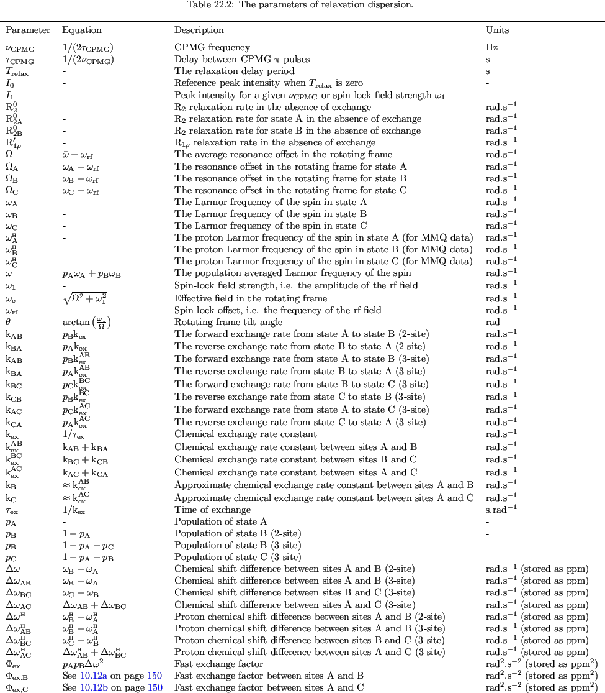
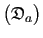

Next: Optimisation algorithms Up: Topology of the space Previous: The gradient Contents Index
The best and most comprehensive description of the space is given by the quadratic approximation of the topology which is generated from the combination of the function value, the gradient, and the Hessian. From the second-order Taylor series expansion the quadratic model of the space is
where
fk is the Hessian, which is the symmetric matrix of second partial derivatives of the function, at the position  .
The Hessian is the matrix of second partial derivatives and is defined as
.
The Hessian is the matrix of second partial derivatives and is defined as
|  | (theparentequation.6) |
The order in which the partial derivatives are calculated is inconsequential, hence the Hessian is symmetric.
As the Hessian is computationally expensive a number of optimisation algorithms try to approximate it, the BFGS algorithm being a notable example. The most powerful minimisation algorithm for model-free analysis - Newton optimisation - requires the value, gradient, and Hessian at the current parameter values.
The relax user manual (PDF), created 2013-11-26.